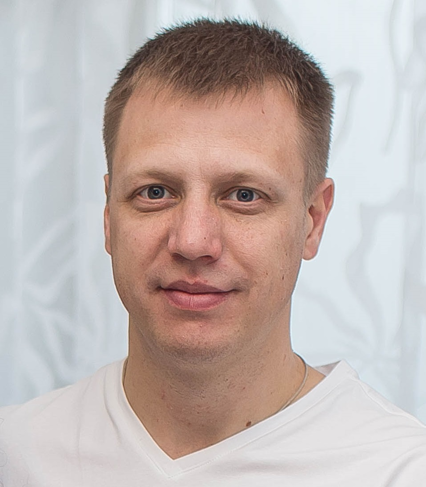

Поташев Евгений Александрович

Сведения о себе
14.04.1982
ХМАО, г. Сургут, Островского 21
8-922-417-59-04, 8-912-087-20-61
Женат, трое детей 2006 г.р., 2008 г.р. и 2018г.р.
Образование
1999-2004 г.
ВЫСШЕЕ
Тюменский Государственный Нефтегазовый Университет (ТюмГНГУ):
- факультет – Автоматизация и Управление;
- форма обучения – дневная;
- специальность - Автоматизация производственных процессов и производств;
- квалификация – Инженер
2005-2023 г.
Курсы:
- «MetsoDNA Engineering course». Учебный центр Metso Automation Inc. Тампере, Финляндия. Июнь 2006г.
- «DeltaV Advanced Configuration» и «DeltaV Advanced Control» . Москва, Emerson. Октябрь 2006г.
- Всевозможные курсы по работе с системой «ValmetDNA»(Info, Networks, Profibus, Info Upgrade, HIMA,…), Тампере, Финляндия. Январь 2015 – Февраль 2020г.
- SkillFactory - незаконченное
Опыт работы
27.07.2022
ПАО «Сургутнефтегаз», ПУ «СургутАСУнефть»
- должность – инженер-технолог 1 категории
- выполняемые функции:
- Эксплуатация, техническое обслуживание и сопровождение комплекса программно-технических средств САУ УКПГ (установка компримирования и подготовки газа);
- Сопровождение программного обеспечения системы: изменение параметров и уставок технологического процесса; изменение мнемосхем отображения информации; изменение количества каналов измерения, реконфигурация системы, изменение алгоритмов работы системы, изменения с учетом опыта эксплуатации установленного программного обеспечения;
- Оперативное устранение отказов аппаратных средств и программного обеспечения.
01.01.2020
АО «Валмет»
- должность – руководитель проектов
- выполняемые функции:
- Управление по реализации сервисных проектов от стадии подготовки технической части перед заключением договоров до полного завершения проекта;
- Составление отчетов, контроль бюджета проектов, контроль за подготовкой заказных спецификаций, заказы оборудования, контроль за работой проектной команды;
- Взаимодействия с Заказчиками, субподрядчиками, бухгалтерией.
12.01.2015
АО «Валмет»
- должность – сервисный инженер (с 2019 года старший сервисный инженер)
- выполняемые функции:
- Сервисное обслуживание и поддержка АСУТП всех объектов, реализованных на базе ValmetDNA;
- Сервисные визиты на производственные объекты (СИБУР, Роснефть) для детальной диагностики АСУТП, подготовка отчетов;
- Поддержка Заказчика в режиме 24/7 по телефону;
- Разработка проектной и рабочей документации для реализации проектов по расширению, модернизации АСУТП.
01.09.2004
ПАО «Сургутнефтегаз», ПУ «СургутАСУнефть»
- должность – инженер-технолог 3 категории (с 01.10.2006 - инженер-технолог 2 категории)
- выполняемые функции:
- Эксплуатация, техническое обслуживание и сопровождение комплекса программно-технических средств САУ ГТЭС (газотурбинные электростанции), САУ УКПГ (установка компримирования и подготовки газа)
- Сопровождение программного обеспечения системы: изменение параметров и уставок технологического процесса; изменение мнемосхем отображения информации; изменение количества каналов измерения, реконфигурация системы, изменение алгоритмов работы системы, изменения с учетом опыта эксплуатации установленного программного обеспечения;
- Оперативное устранение отказов аппаратных средств и программного обеспечения.
Дополнительно
Профессиональные знания и навыки:
- Знание ГОСТов по автоматизации;
- Знание технологических процессов подготовки и переработки газа, получения электроэнергии;
- Знание промышленных протоколов связи Modbus, Profibus, OPC, HART;
- Windows: рабочие станции Windows 98/2000/NT/ME/XP/7/10, серверы Windows NT, 2003/2008/2012/2016/2019; работа с прикладными офисными программами;
- Иностранные языки: английский (Pre-intermediate, технический).
- Высокая работоспособность, коммуникабельность, самостоятельность, ответственность.
- Наличие водительского удостоверения: категория В (стаж вождения 23 года), наличие личного автомобиля.
- Готовность к командировкам.